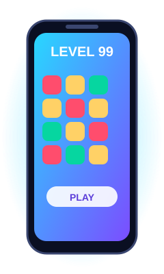
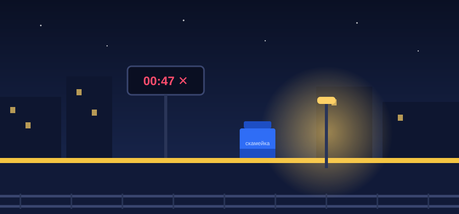
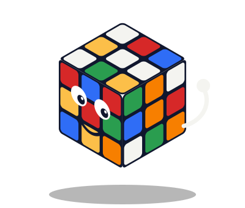

Телефон
- Яркий, быстрый, сразу награждает
- Не требует усилий и терпения
- Подстраивается под тебя и не даёт заскучать
Поздний вечер, пустая платформа и девочка, которая пропустила поезд. Пока она листает яркую игру в телефоне, старый кубик Рубика ждёт, что кто-нибудь наконец его соберёт.
Стрелки сдвигают строку или столбец. Цель: чтобы каждая строка стала одного цвета.
Короткометражка Polder Animation рассказывает ночную историю про встречу цифрового и аналогового. В центре сюжета Эсра, смартфон и живой кубик Рубика.

Эсра приходит на станцию слишком поздно. Впереди долгое ожидание без дела.
Чтобы убить время, она открывает простую яркую игру на смартфоне. Всё мигает, звенит и мгновенно награждает.
Рядом оказывается классический кубик Рубика, и он живой. Он старается привлечь внимание, потому что хочет только одного: чтобы его собрали.
Эсре приходится выбирать между лёгкой цифровой игрой и головоломкой, которую нужно решать руками и терпением. Чем всё закончится, лучше увидеть самим.
Фильм не ругает технологии. Он спрашивает, что мы теряем, когда обычные игрушки уходят на второй план. Авторы разбора на сайте Films pour enfants видят в нём рассказ о растущей роли видеоигр в жизни детей и о том, как исчезают традиционные игрушки.


Старая игрушка не соревнуется с экраном яркостью. Она предлагает другое: настоящую победу, которую ты заработал руками.
Девочка на платформе. Она пропустила поезд и ищет, чем занять себя. Её лицо освещает экран телефона, а вокруг тем временем ждёт настоящая игра.
Старая игрушка с характером. Он перемешан, ему неуютно, и он пытается обратить на себя внимание, чтобы его наконец решили.
Главный соперник кубика. Он не злодей, он просто всегда под рукой и всегда увлекательнее, чем сидеть в тишине.